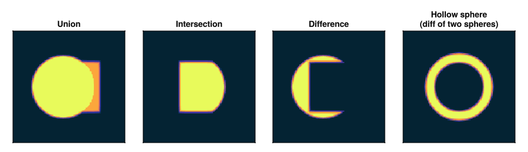

CSG
Shapes can be combined with four boolean operations.

Operations
csg_union(a, b) # inside a or b
csg_intersect(a, b) # inside both a and b
csg_diff(a, b) # inside a but not b
csg_complement(a) # everything outside aFill always delegates to the first (left) operand. csg_complement is intended for use inside csg_intersect, not for direct rendering.
Nesting
Operations can be nested freely:
sphere = FillableSphere((0.5, 0.5, 0.5), 0.3, 1.0)
cube = FillableCuboid((0.5, 0.5, 0.5), (0.5, 0.5, 0.5), 0.8)
inner = FillableSphere((0.5, 0.5, 0.5), 0.22, 1.0)
# Sphere with a cubic bite taken out of it, then hollowed
hollow_cropped = csg_diff(csg_diff(sphere, cube), inner)SDFs and adaptive AA
has_exact_sdf on a CSG shape is true only when both operands have exact SDFs. That's conservative (a CSG SDF isn't always exact even when its parts are), but it's enough to let AdaptiveAntiAliasing skip boundary checks for clearly interior or exterior voxels.
Example
using VoxelShapes
N = 80
dx = 1.0 / N
outer = FillableSphere((0.5, 0.5, 0.5), 0.3, 1.0)
inner = FillableSphere((0.5, 0.5, 0.5), 0.22, 0.0)
shell = csg_diff(outer, inner)
world = World((N, N, N), (dx, dx, dx), [shell], 0.0, SubpixelAntiAliasing())
arr = Array(world)See the API reference for full signatures.